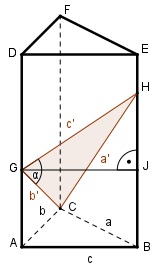

Aufgabe 175 Ein gerades dreiseitiges Prisma, dessen Höhe > 56 cm ist, hat alsGrundfläche ein Dreieck mit den Seiten a = 33 cm, b = 21 cm und c = 45 cm. Eine Ebene, die durch C geht, schneidet die Seitenkante über A in einer Höhe von 28 cm, die über B in einer Höhe von 56 cm. Wie groß sind die größte Seite s dieses Schnittdreiecks und seine Fläche A?

Im Dreieck CBH: (Rechter Winkel bei B) BH = 56 cm Satz von Pythagoras: a’2 = BH2 + a2 = 562 cm2 + 332 cm2 = 4 225 cm2 a’2 = 4 225 cm2 |√ a’ = 65 cm = s Im Dreieck ACG: (Rechter Winkel bei A) AG = 28 cm Satz von Pythagoras: b’2 = AG2 + b2 = 282 cm2 + 212 cm2 = 1 225 cm2 b’2 = 1 225 cm2 |√ b’= 35 cm Im Dreieck GJH: JH = 56 cm – 28 cm = 28 cm Satz von Pythagoras: c’2 = JH2 + c2 = 282 cm2 + 452 cm2 = 2 809 cm2 c’2 = 2 809 cm2 |√ c’= 53 cm Im Dreieck GCH: Fall SSS: Cosinussatz: a’2 = b’2 + c’2 - 2*b’*c’*cos α |+2*b’*c’*cos α a’2 + 2 * b’ * c’ * cos α = b’2 + c’2 | -a’2 2 * b’ * c’ * cos α = b’2 + c’2 - a’2 |:2*b’*c’ b’2 + c’2 - a’2 cos α = ----------------- = 2 * b’ * c’ 352 cm2 + 532 cm2 - 652 cm2 = ----------------------------- = 2 * 35 cm * 53 cm = - 0,0515 --> α = 93° b’ * c’ 35 cm * 53 cm A = -------- * sin α = --------------- * sin 93° = 2 2 35 cm * 53 cm = --------------- * 0,9986 = 926,2 cm2 2